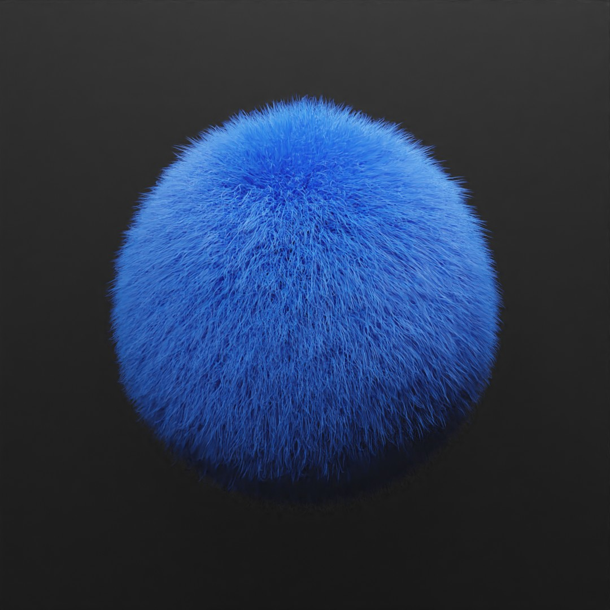
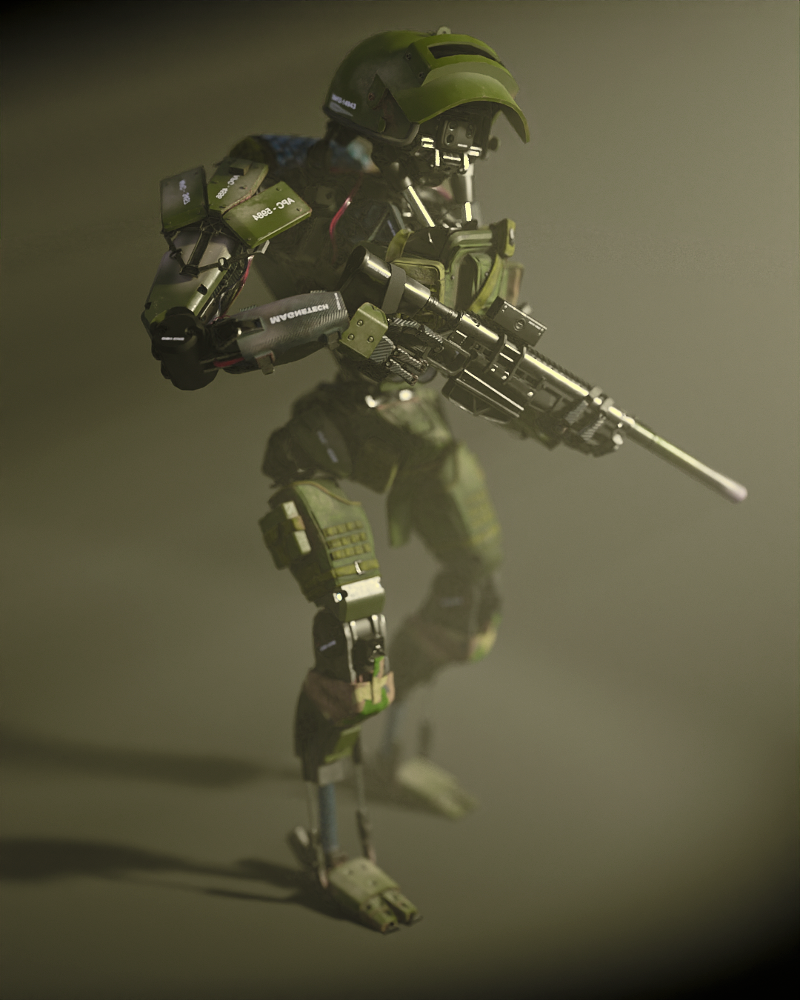

| Proyecto | Categoría | Vista Previa |
|---|---|---|
| Pasillo tenebroso | Full CGI scene | |
| Simulación Tela | Cloth Simulation |  |
| Simulación Agua | Fluid Simulation |  |
| Simulación satisfactoria | Rigid Body simulation | |
| Modelado de camaro | Modeling |  |
| Clase | Recreación interior |  |
| Habitación isométrica | Simulación interior |  |
| Mando XBOX | Photogrametry |  |
| Habitación por encargo | Recreación interior |  |
| Interior por encargo | Simulación de interior |  |
| Bola de pelo | Fur simulation |  |
| Tela translúcida | Cloth Simulation |  |
| Robot de guerra | Model ilumination |  |
| Salón | Interior por encargo |  |
| Simulación de destrucción | Rigid body simulation | |
| Backrooms | Full CGI scene |